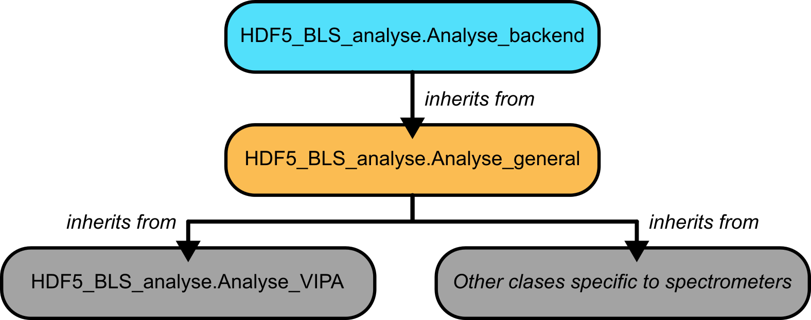
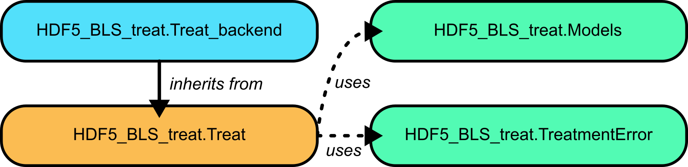

Data Processing with HDF5_BLS
Specifications
Data processing is arguably the second most important part of any study, following the acquisition of the data. Currently, no consensus exists on the way data are processed in BLS. Here, we propose a solution to that problem by offering two packages for unifying the extraction of a Power Spectral Density (PSD) from measures and extracting information from the PSD.
These two packages, namely HDF5_BLS_analyse and HDF5_BLS_treat are based on the same idea: encouraging the use of unified algorithms while allowing other algorithms to be developped and used. To that end, we built these packages with the following specifications in mind:
Modularity: Algorithms are defined as a succession of “standard functions” that serve as basic blocks. Any algorithm utilizing these basic blocks can therefore be applied.
Reversible processing: Algorithms can be stored in objects and re-run entirely or partially (up to a certain function)
Algorithm storage: Algorithms can be stored as standalone files which can be imported, exported and edited.
Algorithm readability: Algorithms are saved with a description of what they do and how they do it. The docstring of the functions used can also be compiled together to obtain a human readable description of the process followed during the algorithm
Developper friendliness: Addition of functions to the processing module should be accessible to most.
With these 5 points in mind, we can describe the process followed in the development of the two processing modules.
Organization of the modules
The modules are organized in classes, that are either used as “accesories” (for storing analytical definition of models for example) or as “main actors” (classes where the processing functions are defined). These latter classes inherit from “backend” classes which are silent objects used as observers of the execution of the code, and tools for the manipulation of algorithms. The backend classes are:
Treat_backend: The backend class of the HDF5_BLS_treat module
Analyse_backend: The backend class of the HDF5_BLS_analyse module
Important
These classes are low-level classes developped as the basis for the rest of the modules to be built on. They should be silent and not be used directly by the user.
HDF5_BLS_analyse
For the HDF5_BLS_analyse module, a general class performing general operations on the data is defined. This class is called Analyse_general and inherits from Analyse_backend. This class is used to perform operations on the data that are not specific to a particular type of spectrometer. For example, the function to add a remarkable point to the data. Functions specific to a particular spectrometers are defined in classes that inherit from Analyse_general, and are dedicated to the analysis of data obtained with that spectrometer.
Here are a few examples of such classes: - Analyse_VIPA: for the analysis of data obtained with VIPA spectrometers. - Analyse_TFP: for the analysis of data obtained with tandem Fabry-Pérot interferometers. (Not yet implemented) - Analyse_TD: for the analysis of data obtained with time-domain spectrometers.(Not yet implemented) - Analyse_SBS: for the analysis of data obtained with echelle spectrometers(Not yet implemented)
Note for developpers
It is possible to develop new spectrometer classes based on spectrometer classes if the new spectrometers are based on a specific type of existing instrument. For example, the Ultrafast Stimulation-Synchronized Brillouin spectrometer (USS-BM spectrometr) being based on a VIPA spectrometer, it would be possible to create a class Analyse_USS_BM inheriting from Analyse_VIPA. This would allow to reuse the functions already defined for VIPA spectrometers, and to add functions specific to the USS-BM spectrometer.
For now, only the Analyse_VIPA class is stable. It inherits from Analyse_general, and is defined for the analysis of data obtained with VIPA spectrometers.
{kind=link}

Fig. 9 A visual representation of the structure of the HDF5_BLS_analyse module.
HDF5_BLS_treat
For the HDF5_BLS_treat module, a class storing the models that can be fitted is defined and called Models. This class is a standalone class that can be used to define new models or to use these models in custom codes. The class Treat is the main class of the module. This class is used to perform the treatment of the data. It inherits from Treat_backend. This class allows the user to fit the data to a model and to extract the results of the fit. Finally, the class TreatmentError is defined to allow the user to catch errors that might occur during the processing of PSD.
{kind=link}

Fig. 10 A visual representation of the structure of the HDF5_BLS_treat module.
Usage points common to both modules
The modules share some methods, in particular:
For opening, saving and editing algorithms
For running algorithms
For adding points of interest
These methods are silent in the sense that they cannot be stored in an algorithm file. Please refer to the API of the modules (see HDF5_BLS_analyse and HDF5_BLS_treat) for more information.
Using the HDF5_BLS_analyse module
Using the HDF5_BLS_analyse module is done following these steps:
Create an object corresponding to the type of spectrometer
Define the algorithm to use to perform the analysis (either by creating it or by opening an existing one)
Perform the analysis
(optional) Save the algorithm to a JSON file
Example with a VIPA spectrometer
The following example shows how to perform the analysis of a VIPA spectrometer. The code is written in Python and assumes that the HDF5_BLS_analyse module is installed.
from HDF5_BLS_analyse import Analyse_VIPA
import numpy as np
# Initialising the Analyse_VIPA object on the mock spectrum
analyser = Analyse_VIPA(x = np.arange(mock_spectrum.size), y = mock_spectrum)
# Creating a blank algorithm to perform the analysis
analyser.silent_create_algorithm(algorithm_name="VIPA spectrum analyser",
version="v0",
author="Pierre Bouvet",
description="This algorithm allows the user to recover a frequency axis basing ourselves on a single Brillouin spectrum obtained with a VIPA spectrometer. Considering that only one Brillouin Stokes and anti-Stokes doublet is visible on the spectrum, the user can select the peaks he sees, and then perform a quadratic interpolation to obtain the frequency axis. This interpolation is obtained either by entering a value for the Brillouin shift of the material or by entering the value of the Free Spectral Range (FSR) of the spectrometer. The user can finally recenter the spectrum either using the average between a Stokes and an anti-Stokes peak or by choosing an elastic peak as zero frequency.")
# Adding points corresponding to peaks to the algorithm
analyser.add_point(position_center_window=12, type_pnt="Elastic", window_width=5)
analyser.add_point(position_center_window=37, type_pnt="Anti-Stokes", window_width=5)
analyser.add_point(position_center_window=236, type_pnt="Stokes", window_width=5)
analyser.add_point(position_center_window=259, type_pnt="Elastic", window_width=5)
analyser.add_point(position_center_window=282, type_pnt="Anti-Stokes", window_width=5)
analyser.add_point(position_center_window=466, type_pnt="Stokes", window_width=5)
analyser.add_point(position_center_window=488, type_pnt="Elastic", window_width=5)
analyser.add_point(position_center_window=509, type_pnt="Anti-Stokes", window_width=5)
# Defining the FSR of the VIPA used
analyser.interpolate_elastic_inelastic(FSR = 60)
# Identifying the central peaks and recentering the spectrum to have them be symetric
analyser.add_point(position_center_window=57, type_pnt="Stokes", window_width=1)
analyser.add_point(position_center_window=68.5, type_pnt="Anti-Stokes", window_width=1)
analyser.center_x_axis(center_type = "Inelastic")
# Saving the algorithm to a standalone JSON file
analyser.silent_save_algorithm(filepath = "algorithms/Analysis/VIPA spectrometer/Test.json", save_parameters=True)
# Extracting the PSD and frequency axis from the analyser object
frequency = analyser.x
PSD = analyser.y
Using the HDF5_BLS_treat module
Using the HDF5_BLS_treat module is done following these steps:
Create an object corresponding to the type of spectrometer
Define the algorithm to use to perform the analysis (either by creating it or by opening an existing one)
Perform the analysis
(optional) Save the algorithm to a JSON file
Example
The following example shows how to perform a simple fit of a Stokes and an Anti-Stokes peak in a PSD.
from HDF5_BLS_treat import Treat
import numpy as np
# Initialising the Treat object on the a doublet of frequency and PSD
treat = Treat(frequency = frequency, PSD = data)
# Creating a blank algorithm to perform the analysis
treat.silent_create_algorithm(algorithm_name="VIPA spectrum analyser",
version="v0",
author="Pierre Bouvet",
description="This algorithm allows the user to recover a frequency axis basing ourselves on a single Brillouin spectrum obtained with a VIPA spectrometer. Considering that only one Brillouin Stokes and anti-Stokes doublet is visible on the spectrum, the user can select the peaks he sees, and then perform a quadratic interpolation to obtain the frequency axis. This interpolation is obtained either by entering a value for the Brillouin shift of the material or by entering the value of the Free Spectral Range (FSR) of the spectrometer. The user can finally recenter the spectrum either using the average between a Stokes and an anti-Stokes peak or by choosing an elastic peak as zero frequency.")
# Adding points corresponding to the central peaks to the algorithm so as to normalize the PSD
treat.add_point(position_center_window=-6, type_pnt="Anti-Stokes", window_width=5)
treat.add_point(position_center_window=6, type_pnt="Stokes", window_width=5)
treat.normalize_data(threshold_noise = 0.05)
# Adding the peaks to fit
treat.add_point(position_center_window=-6, type_pnt="Anti-Stokes", window_width=5)
treat.add_point(position_center_window=6, type_pnt="Stokes", window_width=5)
# Defining the model for fitting the peaks
treat.define_model(model="DHO", elastic_correction=False)
# Estimating the linewidth from selected peaks
treat.estimate_width_inelastic_peaks(max_width_guess=5)
# Fitting all the selected inelastic peaks with multiple peaks fitting
treat.single_fit_all_inelastic(guess_offset=True,
update_point_position=True,
bound_shift=[[-7, -5], [5, 7]],
bound_linewidth=[[0, 5], [0, 5]])
# Applying the algorithm to all the spectra (in the case where PSD is a 2D array)
treat.apply_algorithm_on_all()
# Combining the two fitted peaks together here weighing the result on the standard deviation of the shift
treat.combine_results_FSR(FSR = 60, keep_max_amplitude = False, amplitude_weight = False, shift_err_weight= True)
# Extracting the results
shift = treat.shift
linewidth = treat.linewidth
amplitude = treat.amplitude
BLT = treat.BLT
shift_var = treat.shift_var
linewidth_var = treat.linewidth_var
amplitude_var = treat.amplitude_var
BLT_var = treat.BLT_var